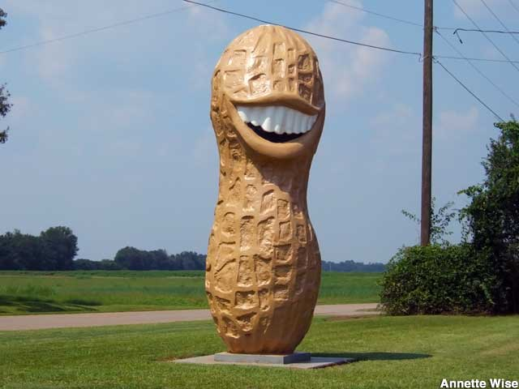

This map for lab 7 adds in a label with specific layers have a label while ommiting other layers.
This newest map using ArcGIS API for JavaScript combines my combined map from lab 05, with my new data. When you click on the link, the green background is of the Cross Timbers Ecoregion set by Texas Parks and Wildlife Department (TPWD). The blue within the ecoregion is the Possum Kingdom lake out of Caddo, TX which is maintained by the TPWD and Army Corps of Engineers. The lake was the first water supply reservoir constructed in the Brazos River basin, and can hold 750,000 acre feet of water, with 550,000 acre feet available for water supply.
This is the link to my application published by NWMSU ArcGIS Server with background map/image.
This is my web service with background.This is the link to my map service published by NWMSU ArcGIS Server.
This is my map service.This is to put a link in the HTML codes.
This is my LinkedIn profile.Click the peanut to go to my LinkedIn

I like finding weird images people have made online
Here is a new one I just found. I like it.
This is the first attempt to show the image with original image size
This is the second attempt to show the image with width and height to specify the display size
This is the third attempt to show the image with style to specify the display size
This is the fourth attempt to shwo the image with original image size